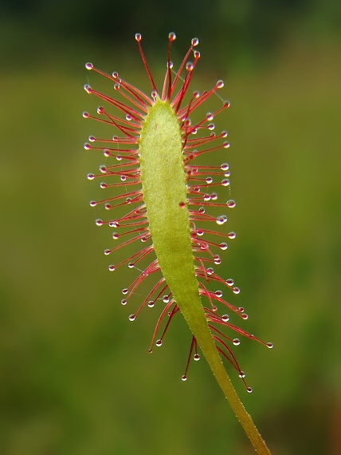

Las plantas carnívoras son un fenómeno sorprendente de la naturaleza que ha llamado la atención de científicos y amantes de la botánica durante siglos. Estas plantas han evolucionado para atrapar y digerir insectos y otros pequeños animales con la finalidad de complementar su dieta en suelos pobres en nutrientes. Además de destacar por su belleza y singularidad, las plantas carnívoras también tienen un impacto significativo en el ecosistema en el que habitan.
 Una planta carnívora, a menudo también llama planta insectívora, es una planta que obtiene sus nutrientes necesarios para sobrevivir a través de la ingesta de insectos.
Fue descrita por primera vez en el año 1875 por Charles Darwin. Según su descripción, se cree que únicamente crecen en lugares con un suelo muy pobre en nitrógeno, como lo son las tierras ácidas de los pantanos
Una planta carnívora, a menudo también llama planta insectívora, es una planta que obtiene sus nutrientes necesarios para sobrevivir a través de la ingesta de insectos.
Fue descrita por primera vez en el año 1875 por Charles Darwin. Según su descripción, se cree que únicamente crecen en lugares con un suelo muy pobre en nitrógeno, como lo son las tierras ácidas de los pantanos
| Caracteristica | Descripcion |
|---|---|
| Morfología y fisiología de las plantas carnívoras | La mayoría de las plantas carnívoras tienen hojas modificadas que actúan como trampas para atrapar y retener presas. Estas hojas pueden tener formas diferentes, como las trampas de la venus atrapamoscas o las hojas pegajosas de la drosera, pero todas comparten la capacidad de cerrarse rápidamente para retener a su presa. |
| ¿Qué comen las plantas carnívoras? | La digestión de las presas en las plantas carnívoras es un proceso complejo que involucra la producción de enzimas y ácidos que descomponen la presa. Una vez que la presa es atrapada y retenida por la planta, se liberan enzimas que descomponen la presa en compuestos simples que pueden ser absorbidos por la planta. Estos compuestos incluyen nitrógeno, fósforo y otros nutrientes esenciales que la planta necesita para crecer y reproducirse. |
| Mecanismos de defensa de las plantas carnívoras | Además de la digestión de presas, las plantas carnívoras también tienen mecanismos de defensa contra las presas que pueden dañar su capacidad de capturar y consumir alimentos. Por ejemplo, algunas plantas carnívoras producen sustancias tóxicas para ahuyentar a las presas, mientras que otras tienen hojas más duras o espinosas para protegerse contra los depredadores. |
| ¿Dónde viven las plantas carnívoras? | La mayoría de las plantas carnívoras se encuentran en regiones húmedas y pantanosas con suelos pobres en nutrientes. Estos hábitats incluyen regiones de turba, marismas, pantanos y regiones de clima cálido y húmedo, como la selva tropical. |
 Venus atrapamoscas: sin duda alguna, la especie más conocida de una planta carnívora es la Venus atrapamoscas, ya que es la que se encuentra representada siempre que buscamos una planta de este tipo. Es aquella que, estando cerrada, tiene forma de semicírculo, pero que abre su boca con espinas para esperar a que se depositen moscas y así atraparlas y devorarlas.
Venus atrapamoscas: sin duda alguna, la especie más conocida de una planta carnívora es la Venus atrapamoscas, ya que es la que se encuentra representada siempre que buscamos una planta de este tipo. Es aquella que, estando cerrada, tiene forma de semicírculo, pero que abre su boca con espinas para esperar a que se depositen moscas y así atraparlas y devorarlas.
Drosera: género de planta carnívora conformada por alrededor de 200 especies. Estas cuentan con pequeños pelos rojizos donde no solo almacenan el agua, sino que también la usan para atrapar a las moscas.
Pinguicula: por último, encontramos una planta carnívora que no parece serlo, sino que se asemeja más a una flor. Pero no te dejes engañar, en cuanto algún insecto ingresa en la flor, la planta lo atrapa
| Cuidado | Descripcion |
|---|---|
| Agua | Las plantas carnívoras necesitan agua de manera constante y, por tanto, prefieren un ambiente húmedo y pantanoso. Ahora bien, hay que evitar el exceso de agua en el suelo y los encharcamientos que puedan causar moho y mala calidad del aire |
| Alimentación | En su alimentación, muchos recomiendan dejar que cacen sus propias moscas, pero en caso de que no haya muchas en tu hogar, puedes comprar una bolsa de moscas listas para comer en algún vivero que las venda. |
| Luz | La mayoría de las plantas carnívoras prefieren una luz brillante, pero indirecta. Evita exponerlas a la luz directa del sol, ya que esto puede quemar sus hojas y matarlas. |
| Suelo | Las plantas carnívoras prefieren un suelo húmedo y bien drenado que se componga de turba, musgo o tierra especial para plantas acuáticas. Es importante evitar el uso de suelo normal o tierra para macetas, ya que estos suelos pueden ser demasiado pesados y dificultar el drenaje adecuado. |
| Temperatura | Proporciona a tu planta una temperatura cálida y húmeda, generalmente entre 20°C y 30°C. Sin embargo, es importante tener en cuenta que algunas especies pueden tolerar temperaturas más frías o más cálidas. |